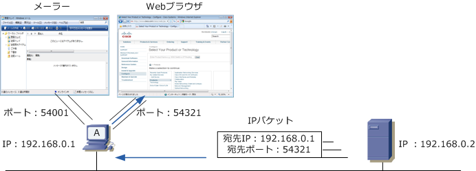
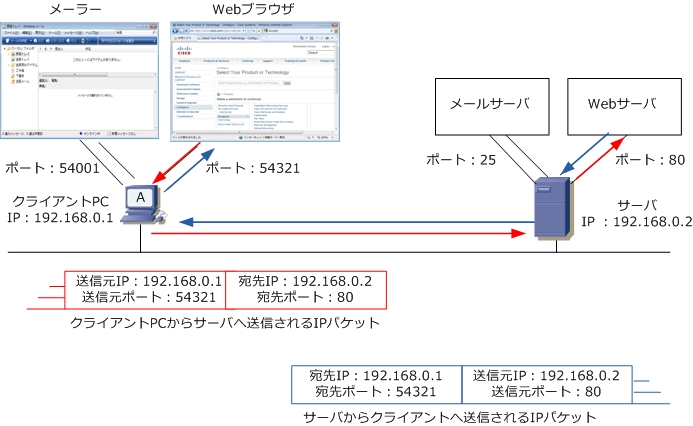
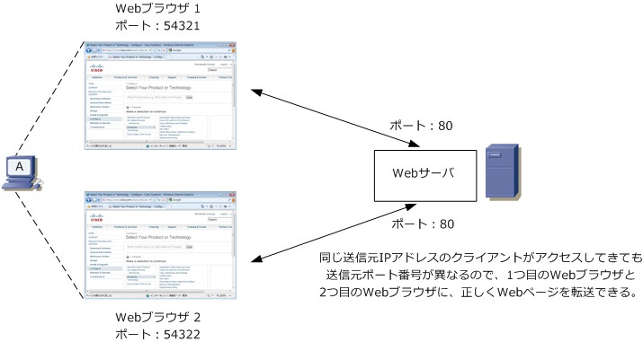

TCP
TCPとは
TCP (Transmission Control Protocol) は、IPと同様にインターネットにおいて標準的に利用されている プロトコルです。TCPは、IPの上位プロトコルでトランスポート層で動作するプロトコル。ネットワーク 層のIPとセッション層以上のプロトコル（例：HTTP、FTP、Telnet) の橋渡しをする形で動作しています。
TCPは、信頼性の高い通信を実現するために使用されるプロトコルであるのに対して、同じく、IPの上位 プロトコルのUDPは信頼性が高くはないが、高速性やリアルタイム性を求める通信に使用されるプロトコル。 このようにどちらかが優れているということではなく、通信特性によりTCPまたはUDPを使い分けされます。
※ TCPは、コネクション型通信（通信開始前に相手との間で仮想的な通信路を確保する）を行います。 ※ UDPは、コネクションレス型通信（通信開始前に相手との間で、事前のやり取りなし）を行います。
ポート番号とは
ポート番号とは、コンピュータが通信を行うために通信先のアプリケーションを特定するための番号のこと。 コンピュータ間の通信で通信する宛先のIPアドレスが分かれば、そのIPアドレスにデータを送信できますが そのデータを受信したコンピュータが、どのアプリケーションでそれを受信するのか判断するために必要です。
例えば下図の通り、コンピュータ上でWebブラウザとメーラーを起動させていたとします。Webブラウザで インターネットの閲覧をするために、コンピュータ内でデータをWebブラウザに送り届ける必要があります。 TCPヘッダにポート番号情報が付加することで、どのアプリケーションなのかを識別しこれを実現しています。

ポート番号は「0～65535」の範囲で割り当てられます。このポート番号は以下の3つに分類されています。
| ポート番号のタイプ | ポート番号の範囲 | 説明 |
|---|---|---|
| ウェルノウンポート番号 | 0～1023 | IANAで管理。サーバのアプリケーションに割り当てられるポート番号。 |
| 登録済みポート番号 | 1024～49151 | IANAで管理。独自に作成したアプリケーションに割り当てられるポート番号。 |
| ダイナミックポート番号 | 49152～65535 | クライアント側のアプリケーションに自動的に割り当てられるポート番号。 |
ウェルノウン(well-known)ポート番号は“よく知られた”ポート番号であるので、サーバのアプリケーション に割り当てられます。登録済みポート番号は独自に作成されたアプリケーションに割り当てられます。これは IANAにより管理されています。ダイナミックポート番号はアプリケーションプロセスの要求に応じて動的に 割り当てられるポート番号のことです。ダイナミックポート番号はクライアント側のアプリで使用される番号。 ※ 登録済みポート番号は一般的にサーバに割り当てられますが、登録済みポート番号がクライアントに割り当てられる時もあります。
下図でクライアントPCがWebページを開こうとすると、クライアントPCは宛先ポート番号を「80」と指定し アクセスを行います。WebブラウザとWebサーバのデータ送受信はHTTPプロトコル（ポート番号80）を使用。
そして、サーバからのWebページの情報を得るためにはクライアントPC側にもポート番号が必要です。この ポート番号はアプリケーションがランダムに動的に割り当てます。今回の場合、Webブラウザが自身のポート 番号を54321と割り当てたので、それを自身のポート番号（送信元ポート番号）としてパケットを送出します。
WebサーバがクライアントPCからのパケットを受信すると、送信元のIPアドレスと宛先のポート番号の情報 が分かるので、この送信元の情報を宛先の情報にしてデータを送り返すことにより双方向の通信が成立します。

なお、クライアントPCが複数のWebブラウザを開いている場合、そのWebブラウザごとに正しくWebページ を表示させるためにWebブラウザごとに異なるポート番号がランダムに割り当てられます。下図はイメージ図。
